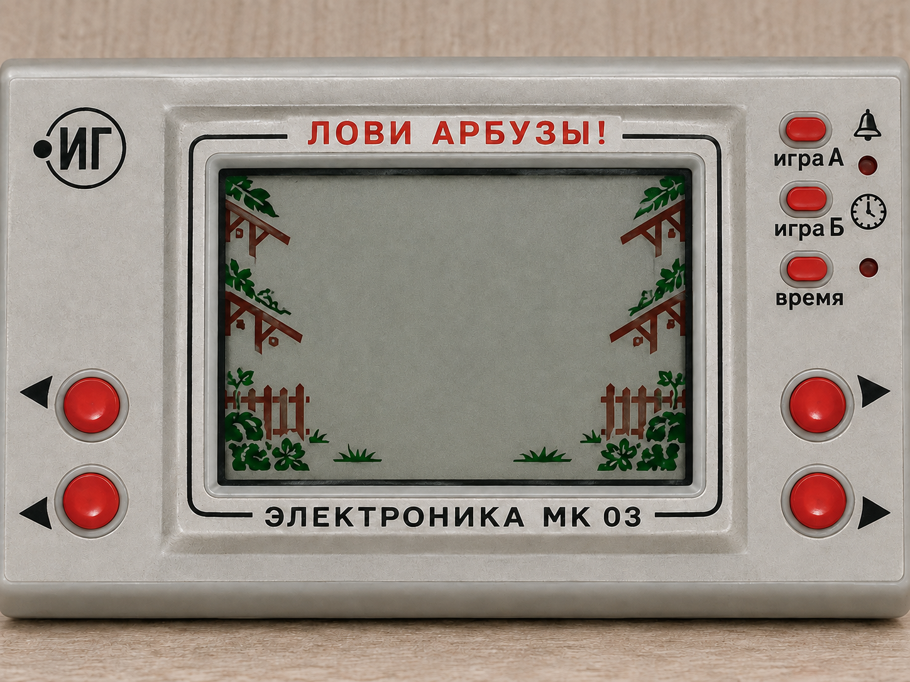

АРБУЗОВ ПОЙМАНО00
Нажмите «Начать игру». Поймайте 68 арбузов — будет сюрприз!
Ловим арбузы только в горизонтальном положении.
Если игра уже началась, она останется на паузе.
← Все игры
Нажмите «Начать игру». Поймайте 68 арбузов — будет сюрприз!